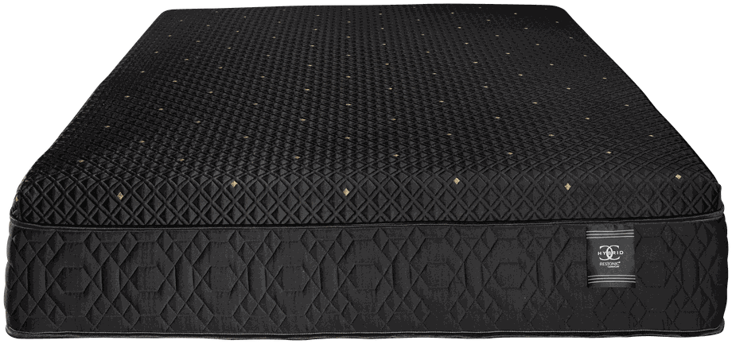

DreamFinder · motion laboratory
A candidate motion language for the assisted-sales consultation. Every movement derives from physical mattress behavior — card placement, textile tension, compression and rebound — at the scale of a salesperson's hand. The salesperson narrates; the screen never competes.
One realistic consultation ending: the final three quiz answers become tactile cards and gather into the Sleep Brief. In the Night Loom — the one signature transition — the brief's three labeled values leave it as ribbons, cross the loom as labeled threads, resolve into a quilted cover swatch, and the swatch parts into the recommendation. Tap answers to move through it; every long moment can be skipped by tapping.
Question 10 of 12
The salesperson reads the question aloud; the customer taps a card.
Question 11 of 12
Noted for the conversation — the brief records it, the products don't promise it.
Question 12 of 12
Production uses a slider; the lab renders feel as cards to test the card language.
Sleep Brief

Restonic
Each scene isolated and explicitly replayable, for evaluation one behavior at a time.
A quilted surface that compresses the way the chosen feel would. It represents the customer's selected feel — never a measured product property. Firm spreads wide and shallow; plush sinks deep and local. Tap the surface or pick a feel.
Your selected feel — demonstration only
The hero is lowered, contacts, and settles a beat after the hands leave — shadow tightens as it descends. Name is readable before touchdown; match reasons land one spoken sentence apart. Only the hero arrives; siblings would fade flat.
Restonic
Everything separates from the base, which never moves. Labels sit in a flow column with drawn leader rules — never pinned to layer geometry, so Spanish expansion cannot collide with the diagram. On-demand only; in production this would live in the mattress drawer and never auto-play.
Materials from the manufacturer's factory-build specification (mapping strong, not SKU-confirmed). Geometry schematic — not to scale.
Materials from the manufacturer's factory-build specification (mapping strong, not SKU-confirmed). Geometry schematic — not to scale.
Construction demonstration — a general mattress build, not this model's specification.
Both builds share a bottom baseline and one clock — layers separate by index in exact sync; the shorter stack finishes early and holds. Usability review's recommended production default is the static aligned state; the synchronized build animation is the concept under evaluation.
Materials from the manufacturer's factory-build specification (mapping strong, not SKU-confirmed). Geometry schematic — not to scale.
Evaluation only — none of these is approved for production. Each is framed so it cannot become an unsupported product-performance demonstration: every visual represents the customer's stated concern, never a measured product result.
One slow transverse deflection crossing the surface — the thing the customer already fears, shown honestly. It illustrates the question, not a product's isolation performance. In production it would render only when the customer raised partner movement (solo sleepers skip that question and must never see this).
Your concern, illustrated — not a product measurement
Cooling expressed as fabric, never as air: a tighter weave and one raking-light sheen. No mist, no frost, no thermometers, no numbers. Usability review recommends rejecting any ambient version of this concept outright.
Material rendering only — no temperature performance is shown or implied.
The product's literal function: head and foot sections pivot at real hinge points with actuator pacing — slow start, steady travel, slow stop. Frame, legs and labels never move. Plays once per preset; never loops. (The production SMIL version loops for 8 s and cannot honor reduced motion — this is the CSS-driven replacement candidate.)
No human silhouette, no anatomy, no efficacy: bands on the mattress surface the customer just pressed, marked from their own answers. The copy stays in the language of the customer's complaint, never diagnosis or relief.